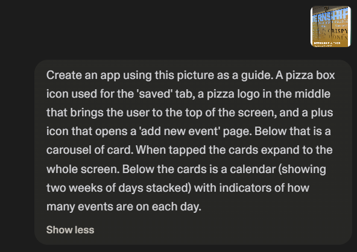
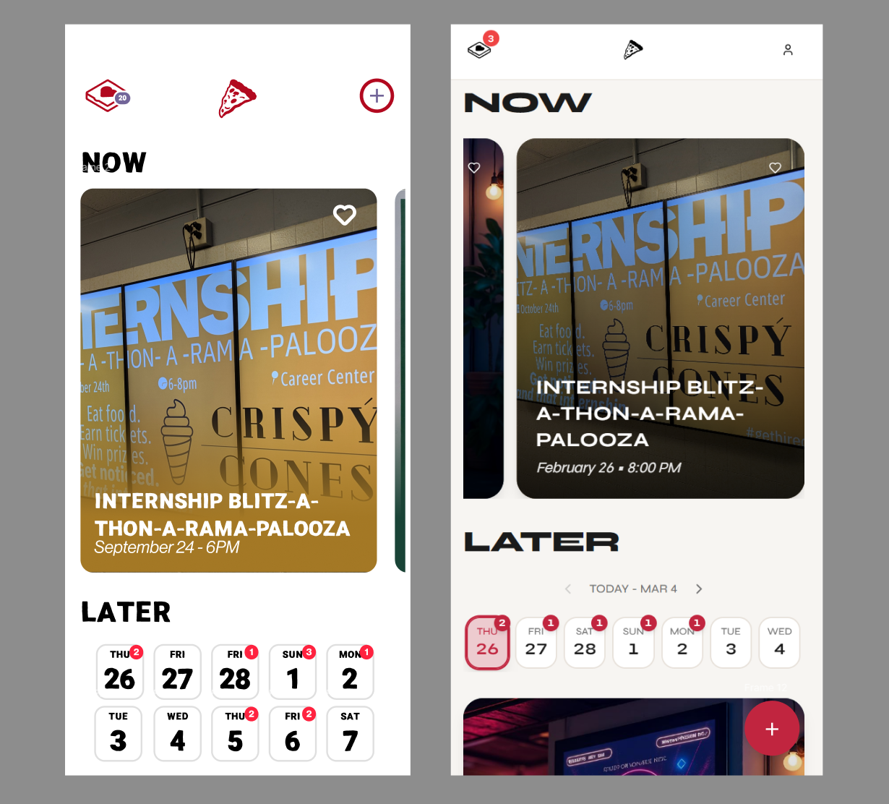

We the Pizza
This was an idea I had when I was in college. There were so many events going on that offered food, enough that it was tempting to track them all and never have to pay for my own pizza again. At the same time, I wanted to experiment with creating functional prototypes using AI, hoping to learn about the process, advantages, and limitations of current technology.
Scope & Process
The principle goal was to create a prototype that would be sufficient to use in user testing and demonstration. Thus there is no user login system or many of the features that would be needed in a production app. Instead I focused on the core features of the app - adding, viewing, and rating events. This is a web-based, mobile-first application.
My process for creating We the Pizza was to make prototype screens using Figma, the way I typically would. Then, instead of handing it off to developers or coding it myself, I gave the images to Loveable to recreate. I included a detailed description of the app elements, but instructed it to match the images closely for design. My design was intentionally simple to keep the barrier between the images and AI implementation low.
Intial prompt given to Loveable.
The 80/20 Problem
As it currently exists, AI vibe coding sits in a peculiar place. It can get the product 80% of the way there very quickly, but the final 20% of refinement is difficult and slow. This is not unique to AI, but it still impedes the rapid prototype development that was the goal of this project.
I was pleasantly surprised by how close to my designs it initially looked, but on closer inspection there were many little things that needed refinement. Again, not unusual in the process of design. However, when I prompted it to correct and improve, it seemed there was a wall. Inconsistencies, visual bugs, and reverting changes were common. It took me 5 minutes to create the first version, but several weeks to finally get it to a sufficiently functional state.
Side by side comparison of the original design (left) and final prototype (right).
Experience
Though the actual prompting process was somewhat more arduous than I expected, there were many benefits I noticed to this workflow. First, I could design and create userflows that would be difficult to wireframe using Figma, like ratings, live counters, and user input. Additionally, by having a functional and adaptable prototype, I could experiment very quickly with different ideas. I found myself adding all sorts of new features that were inspired by using the prototype myself.
I can imagine this being a game-changing user testing tool. It would allow a team to very quickly get a workable prototype for testing and feedback. Having reactive sliders and text fields could really elevate the user experience, leading to more accurate and useful feedback. A/B tests would be easier than ever and all of this could be done earlier in the design process than ever before.